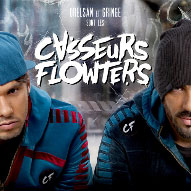
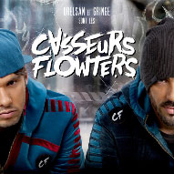

SIMPLE. BASIQUE.
On a tendance à l’oublier vu l’omniprésence des Casseurs Flowteurs dans le paysage pop français (deux albums, une série et un film depuis 2013), mais cela fait déjà six ans (!) qu’Orelsan n’a pas sorti d’album solo. L’artiste caennais va présenter son troisième LP d’ici quelques semaines, et pour marquer l’événement, il a fait les choses en grand : La vidéo d’annonce de sa sortie est un incroyable plan séquence de trois minutes filmé en Ukraine, avec un drone...
« Basique » est au croisement entre le clip et le teaser promo. Orel y présente un morceau inédit qui revient aux bases de sa réflexion sur le monde, mis en scène par le duo Greg&Lio – récents lauréats de la Victoire de la Musique du Clip de l’Année avec « Makeba » de Jain. Ce n’est pas leur première collaboration : les réalisateurs étaient déjà derrière les très beaux clips « Inachevés » et « Des Histoires à raconter » des Casseurs Flowteurs. Cette fois-ci, l’équipe est partie à Kiev, en Ukraine, sur le chantier du pont de Podilsko-Voskresensky, avec plusieurs centaines de figurants…
Quant à la date de sortie du nouvel album d’Orelsan, le rappeur donne un « petit » indice à la fin de la vidéo…
Les albums Réservation
 
